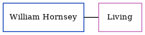

Dennis Arthur Horne 1929 - c2001
[ Home ] | [ Calendar ] | [ Surnames Index ] | [ Census Index ] | [ Family History ]The child of Arthur Horne (a general carpenter laborer) and Mary Taylor, Dennis Horne, the second cousin once-removed on the father's side of Nigel Horne, was born in Canterbury, Kent, England on Jul 26, 19291,2,3. On Sep 29, 1939, he was living at 76 Querns Road in Canterbury1.
He died c. May 2001 in Thanet With Dover, Kent, England3.
Parents
- Arthur was born on Aug 28, 1901
- Mary J was born on Mar 10, 1903
Citations
- 1939 Register - Findmypast (was the son of the head of the household)
- England & Wales births 1837-2006 - Findmypast
- England & Wales deaths 1837-2007 - Findmypast
Media
England & Wales births 1837-2006 - BMD/B/1929/3/AZ/000578/017
1939 Register - TNA/R39/1677/1677D/013/29
England & Wales deaths 1837-2007 - BMD/D/2001/6/84308409
Family Tree
Generated by ged2site. Last updated on Jun 11, 2024